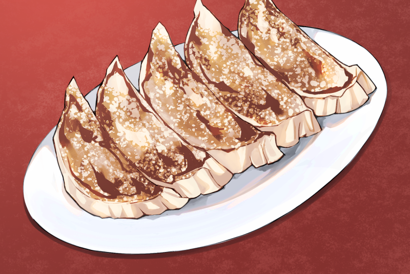
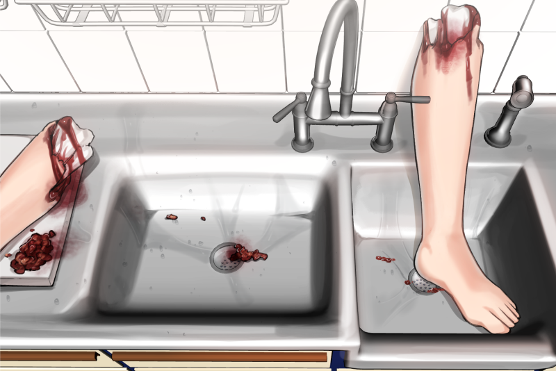
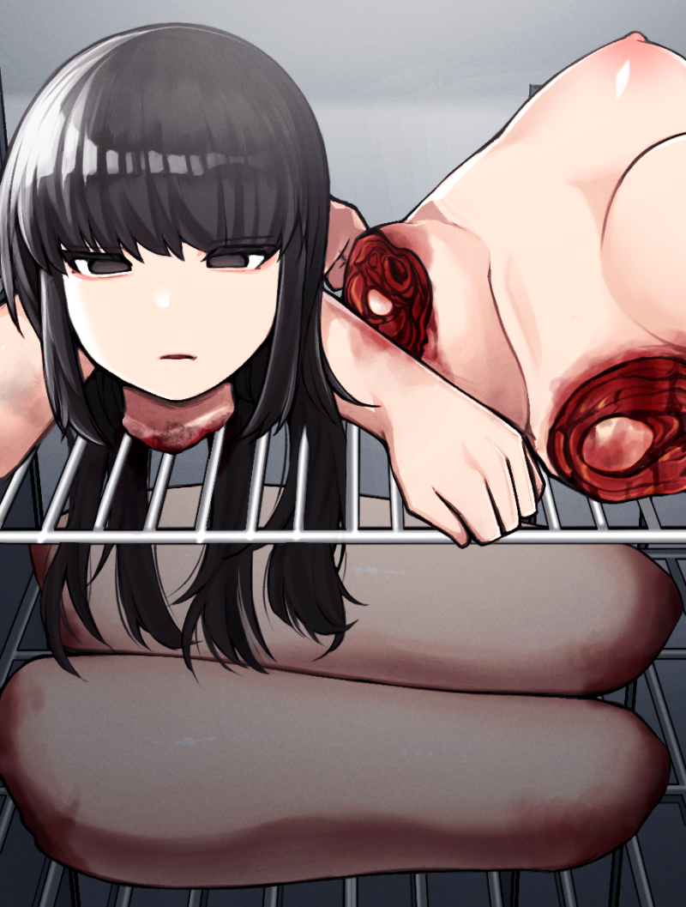
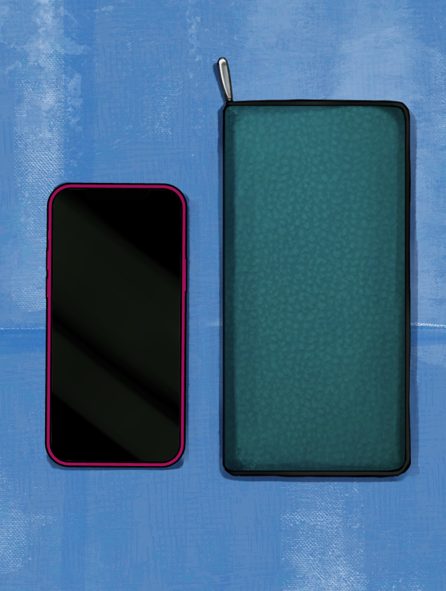

谷中中華食堂人肉混入事件

谷中中華食堂人肉混入事件（やなかちゅうかしょくどうにんにくこんにゅうじけん）は、2024年に東京都台東区谷中で発生した殺人・死体損壊事件である。個人経営の中華料理店「大龍飯店生活館」で、 女性客を殺害後、その遺体の一部を処理目的で餃子の餡に混入させていたことが、調理場の捜索により発覚し、日本国内に大きな衝撃を与えた。
概要
2024年6月、東京都台東区谷中の中華料理店「大龍飯店生活館（だいりゅうはんてんせいかつかん）」の店内で、若い女性客が殺害される事件が発生。加害者は店主の張文徳（ちょう・ぶんとく、 当時74歳）であり、遺体を遺棄せず、店の裏側にある仕込み専用の調理室で一部を切断・加工し、餃子餡に混入させて営業を継続していた。
客席からは裏調理室の様子は見えず、発覚まで誰も異変に気づかなかった。
警視庁による店舗の裏側や厨房の捜索で異常が発覚し、殺人と死体損壊、食品衛生法違反の容疑で逮捕された。

背景
張文徳は中国出身の料理人で、1980年代に来日。長年、都内の複数の中華料理店で働いたのち、2010年に谷中の住宅街に「大龍飯店生活館」を開業。 定食を中心とした「町中華」として地元住民に親しまれていたが、 1人で切り盛りしていたため、内部の詳細は不明な点も多かった。
被害者は近隣に住む女性、藤崎美咲（仮名、23歳）で、事件当日も1人で同店を訪れていた。
失踪と初動捜査
6月12日、藤崎が外食に出かけたまま帰宅せず、翌日になっても連絡が取れなかったことから、家族が警察に行方不明届を提出。 周辺の防犯カメラ映像の解析により、 藤崎が最後に入店した店が「大龍飯店生活館」であることが確認された。
捜査員が張に事情を聴いたところ、当初は「そのような客は来ていない」と否定していたが、厨房や調理場を調べた警察官が異臭とともに血痕や不自然な肉片の存在に気づいた。
裏調理室の業務用冷凍庫内からは、被害者の四肢や胴体、頭部を含む遺体の全てが切断された状態で保管されていた。
足の一部には切り分けた痕があり、一部が調理に用いられていたとみられる。
また、冷凍庫の隅からは藤崎のスマートフォンや財布、血痕のついた衣類も一緒に押し込まれており、異常な保管状態が確認された。


犯行の動機と経過
その後の取り調べで、張は犯行を認め、「料理に文句をつけられ、店や人格まで罵られた。怒りが抑えられなかった」 と供述。藤崎が料理を撮影しながら「まずい」「汚い」と口にし、 執拗に批判してきたことがきっかけで口論に発展し、カウンター越しにもみ合いの末、首を絞めて殺害したとされる。
殺害後、遺体を処理しきれず厨房の冷蔵庫に一時保管。数日後、足の一部を切断し、細かく刻んで餃子の餡に混入させて提供していた。
厨房奥で発見された藤崎のスマートフォンには、事件当日の映像が残っていた。動画には藤崎が料理を撮影しながら張を罵倒する様子が映っており、カウンター越しに口論、 そしてもみ合いになった末にスマートフォンが床に落ちる音、天井を映した状態で約6分間の音声が録音されていた。 音声の後半には、藤崎が悲鳴をあげる声、張の荒い息遣い、物が倒れる音、「どうする…どうすれば…」といった独白が記録されていた。